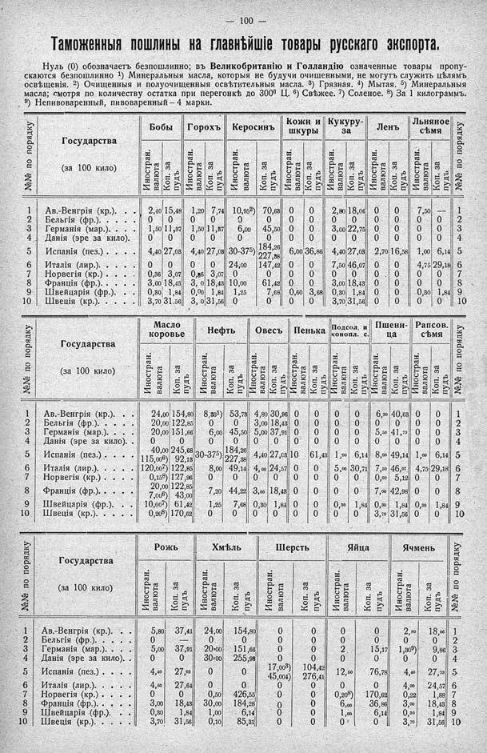

Лист источника 146
Скан

Распознанный текст
— 100 —
Таможенныя пошлины на главнѣйшіе товары русскаго экспорта.
Нуль (0) обозначаетъ безпошлинно; въ Великобританію и Голландію означенные товары пропу-
скаются безпошлинно 1) Минеральныя масла, которыя не будучи очищенными, не могутъ служить цѣлямъ
освѣщенія. 2) Очищенныя и полуочищенныя освѣтительныя масла. 3) Грязная. 4) Мытая. 5) Минеральныя
масла; смотря по количеству остатка при перегонкѣ до 300° Ц. 6) Свѣжее. 7) Соленое. 8) За 1 килограммъ.
9) Непивоваренный, пивоваренный — 4 марки.
№№ по порядку Государства (за 100 кило) Бобы Иностран. валюта Коп. за пудъ Горохъ Иностран. валюта Коп. за пудъ Керосинъ Иностран. валюта Коп. за пудъ Кожи и шкуры Иностран. валюта Коп. за пудъ Кукуру-за Иностран. валюта Коп. за пудъ Ленъ Иностран. валюта Коп. за пудъ Льняное сѣмя Иностран. валюта Коп. за пудъ №№ по порядку
1 Ав.-Венгрія (кр.). . . 2,40 15,48 1,20 7,74 10,95²) 70,63 0 0 2,80 18,06 0 0 7,50 — 1
2 Бельгія (фр.). . . . . 0 0 0 0 0 0 0 0 0 0 0 0 0 0 2
3 Германія (мар.). . . 1,50 11,87 1,50 11,87 6,00 45,50 0 0 3,00 22,75 0 0 0 0 3
4 Данія (эре за кило). 0 0 0 0 0 0 0 0 0 0 0 0 0 0 4
5 Испанія (пез.) . . . 4,40 27,03 4,40 27,03 30-375) 184,26 227,38 6,00 36,86 4,40 27,03 2,70 16,58 1,00 6,14 5
6 Италія (лир.). . . . 0 0 0 0 24,00 147,42 0 0 7,50 46,07 0 0 4,75 29,18 6
7 Норвегія (кр.) . . . 0,36 3,07 0,36 3,07 0 0 0 0 0 0 0 0 0 0 7
8 Франція (фр.) . . . . 3,00 18,43 3, 0 18,43 10,00 61,42 0 0 3,00 18,43 0 0 0 0 8
9 Швейцарія (фр.) . . 0,30 1,84 0,00 1,84 1,25 7,68 0,60 3,68 0,30 1,84 0 0 0,30 1,84 9
10 Швеція (кр.). . . . . 3,70 31,56 3, 0 31,56 0 0 0 0 3,70 31,56 0 0 0 0 10
№№ по порядку Государства (за 100 кило) Масло коровье Иностран. валюта Коп. за пудъ Нефть Иностран. валюта Коп. за пудъ Овесъ Иностран. валюта Коп. за пудъ Пенька Иностран. валюта Коп. за пудъ Подсол. и конопл. с. Иностран. валюта Коп. за пудъ Пшени-ца Иностран. валюта Коп. за пудъ Рапсов. сѣмя Иностран. валюта Коп. за пудъ №№ по порядку
1 Ав.-Венгрія (кр.). . 24,00 154,80 8,33¹) 53,78 4,80 30,96 0 0 0 0 6,30 40,63 0 0 1
2 Бельгія (фр.). . . . 20,00 122,85 0 0 3,00 18,43 0 0 0 0 0 0 0 0 2
3 Германія (мар.). . . 20,00 151,66 6,00 45,50 5,00 37,91 0 0 0 0 5,50 41,70 0 0 3
4 Данія (эре за кило). . 0 0 0 0 0 0 0 0 0 0 0 0 0 0 4
5 Испанія (пез.). . . 40,00 115,00⁶) 245,68 92,13 30-375) 184,26 227,38 4,40 27,03 10 61,43 1,00 6,14 8,00 49,14 1,00 6,14 5
6 Италія (лир.). . . 120,00⁷) 122,85 8,00 49,14 4,00 24,57 0 0 5,00 30,71 7,50 46,07 4,75 29,18 6
7 Норвегія (кр.) . . . 0,15⁸) 127,96 0 0 0 0 0 0 0 0 0,60 5,12 0 0 7
8 Франція (фр.). . . . 20,00 7,00⁶) 122,85 43,00 7,20 44,22 3,00 18,43 0 0 0 0 7,00 42,98 0 0 8
9 Швейцарія (фр.). . 10,00⁷) 61,42 1,25 7,68 0,30 1,84 0 0 0,30 1,84 0,30 1,84 0,30 1,84 9
10 Швеція (кр.). . . . 0,20⁸) 170,62 0 0 0 0 0 0 0 0 3,70 31,56 0 0 10
№№ по порядку Государства (за 100 кило) Рожь Иностран. валюта Коп. за пудъ Хмѣль Иностран. валюта Коп. за пудъ Шерсть Иностран. валюта Коп. за пудъ Яйца Иностран. валюта Коп. за пудъ Ячмень Иностран. валюта Коп. за пудъ №№ по порядку
1 Ав.-Венгрія (кр.). . 5,80 37,41 24,00 154,80 0 0 0 0 2,80 18,06 1
2 Бельгія (фр.). . . . 0 — 0 0 0 0 0 0 0 0 2
3 Германія (мар.). . . 5,00 37,91 20•00 151,66 0 0 2 15,17 1,30⁹) 9,86 3
4 Данія (эре за кило). . 0 0 30,00 255,98 0 0 0 0 0 0 4
5 Испанія (пез.) . . . 4,40 27,03 0 0 17,00³) 45,004) 104,42 276,41 12,50 76,78 4,40 27,03 5
6 Италія (лир.). . . . 4,50 27,64 0 0 0 0 0 0 4,00 24,57 6
7 Норвегія (кр.) . . . 0 0 0,50 426,55 0 0 0,20⁸) 170,62 0,22 1,88 7
8 Франція (фр.). . . . 3,00 18,43 30,00 184,28 0 0 6,00 36,86 3,00 18,43 8
9 Швейцарія (фр.). . 0,30 1,84 1,00 6,14 0 0 1,00 6,14 0,30 1,84 9
10 Швеція (кр.). . . . 3,70 31,56 0,10 85,31 0 0 0 0 3,70 31,56 10